Find the right price in seconds — one that balances profit and value.
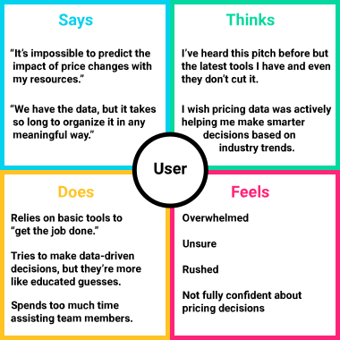
An empathy map helps us establish our personas by finding their voices, feelings, and motivations.Product teams may be unable to monitor price performance of their products, which restricts their ability to identify the right product mix and explore drivers for low performing products.
Pricing teams may not have the right skills or capabilities to make smart, data‑driven pricing decisions.
Leadership struggles with the trade‑off between revenue growth and profitability.
In order to know what we are going to need to design, we need to illustrate a typical interaction between Michael and Steven.
My team and I assembled an affinity map to organize the results of our competitive analysis into gaps left by the competition and opportunities presented by these gaps.
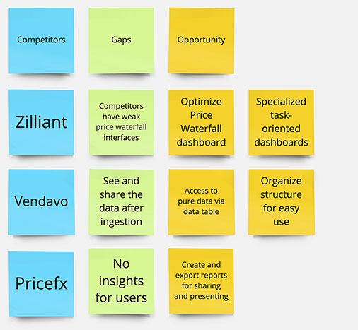
An affinity map is a great way to organize the results of the competitive analysis into opportunities left by the competition.An interactive chart that allows users make hypothetical price adjustments and see their effects in real‑time
Give users a direct line to the underlying data, instead of routing every question through a report request
Dashboards built around what each role actually needs to do, not a one-size-fits-all view of every metric
Turn any dashboard view into a polished report ready to share with stakeholders
With opportunities identified, we sketched, iterated, and refined wireframes for each dashboard. Since users access the product through a secured VPN on laptop or desktop, those screen sizes were our focus.
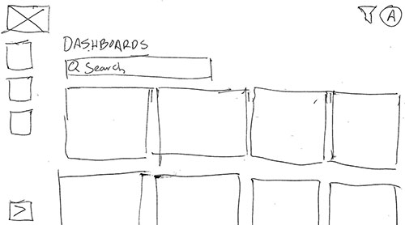
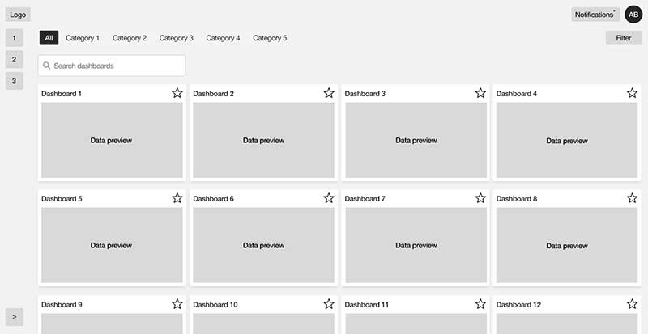
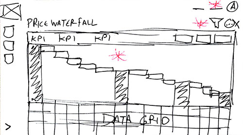
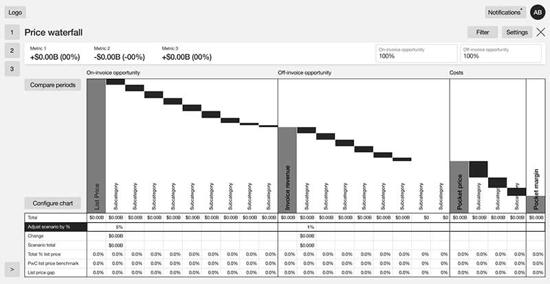
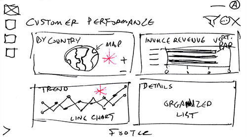
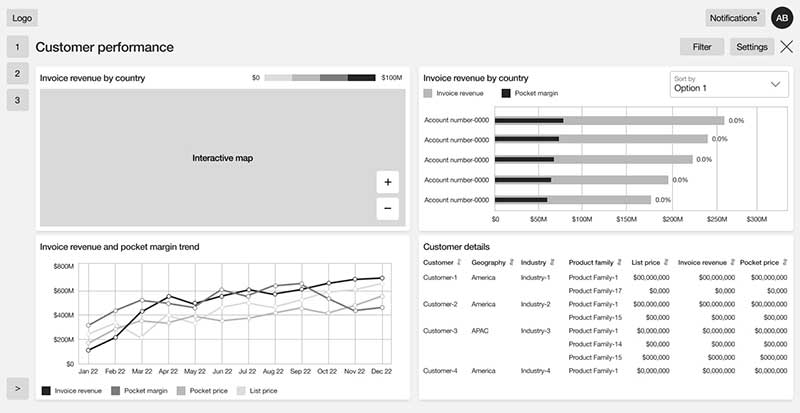
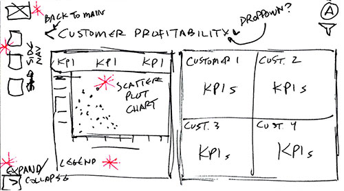
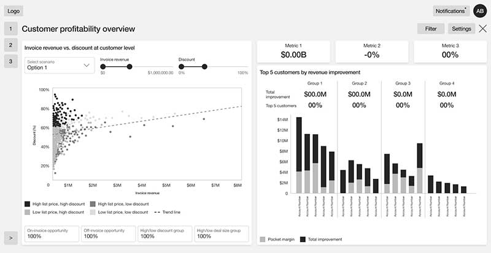
Observing users interacting with prospective designs is crucial to finding out if the designs work practically.
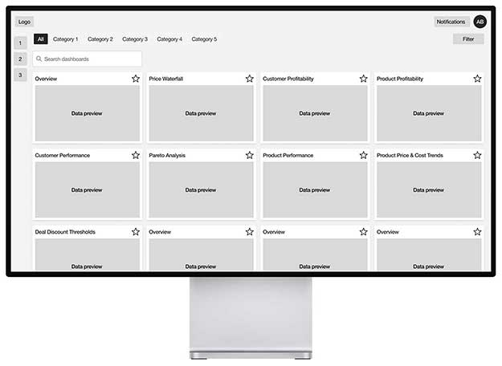
After assembling a lo-fi prototype to demonstrate a Pricing Lead's journey to implement a price adjustment request, the team and I conducted several moderated live usability studies with stakeholders and subject matter experts fully versed in marketing and price adjustment.
Based on moderated usability sessions with 8 participants via Microsoft Teams (~1 hour each), asking each to act as a Pricing Lead and use the low-fidelity prototype to complete a price adjustment request.
Checking the current price in the Price Waterfall chart, making an adjustment, and reviewing the results
Testers noted that "the data is clearly represented" and "useful data for making a price adjustment"
Several testers called it "better designed" and "more thought out" than what they use
The platform had grown to 30+ dashboards, built up over hundreds of prior client engagements — powerful, but overwhelming for anyone encountering it for the first time. They didn't know where to start a given task until they understood the dashboards.
Work with stakeholders and subject matter experts to prioritize dashboards and find common actions for Pricing Leads, eliminating impractical options. Pricing Leads will have common, repetitive tasks to complete. Provide a prominent list of quick start options to reduce burden of dashboard choices.
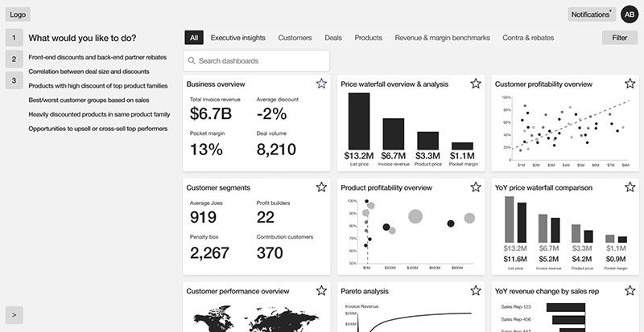
UPDATED: Now the opening screen has a Quick Action Menu that lists common tasks alongside dashboards valuable to the user's roleIf testing is important, retesting is more important. We conducted another round of interviews and confirmed our solutions. They worked! All test users performed their provided tasks more efficiently and praised the design adjustments.
After validating our solutions with users, the next step was to finalize our dashboards and bring them to life.
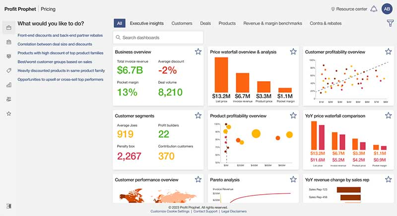
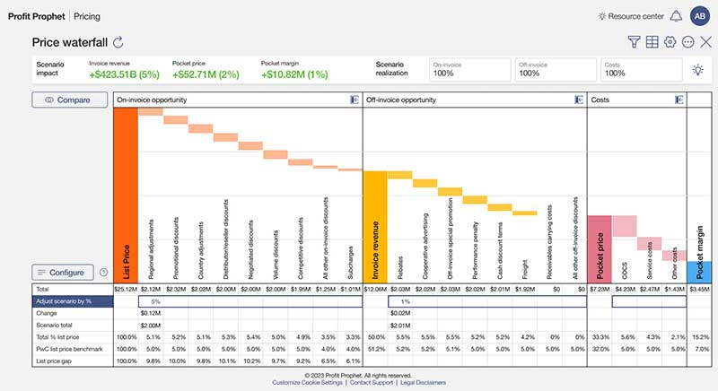
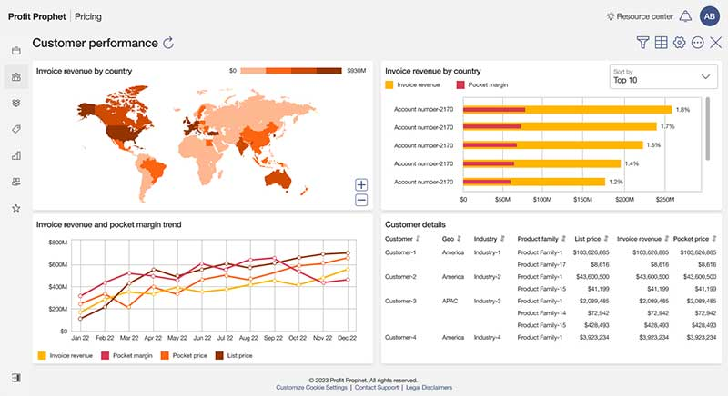
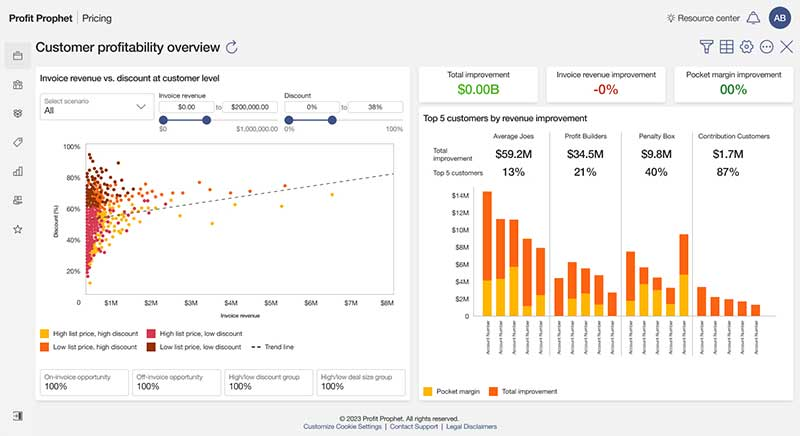
The final step before handing off our designs to the development team was to take our high-fidelity mock-ups and create a working prototype, which would be an integral part of future presentations, helping us verify the final details with testers, and serve as a visual template for the developers to emulate.
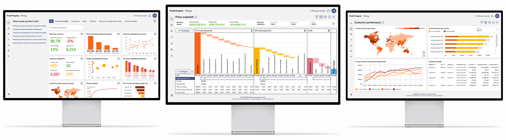
The more options you provide to a user, the more complex the decision-making process becomes. Providing essential choices reduces confusion and allows user to complete tasks faster.
In addition to limiting the number of dashboard options, we provided the users with a Quick Start section to set them on the right path from the very beginning with common tasks.
Through the testing and interview process we learned which charts were most ideal for each role and used feedback to make them easier to use. Our robust Price Waterfall chart certainly turned some heads.